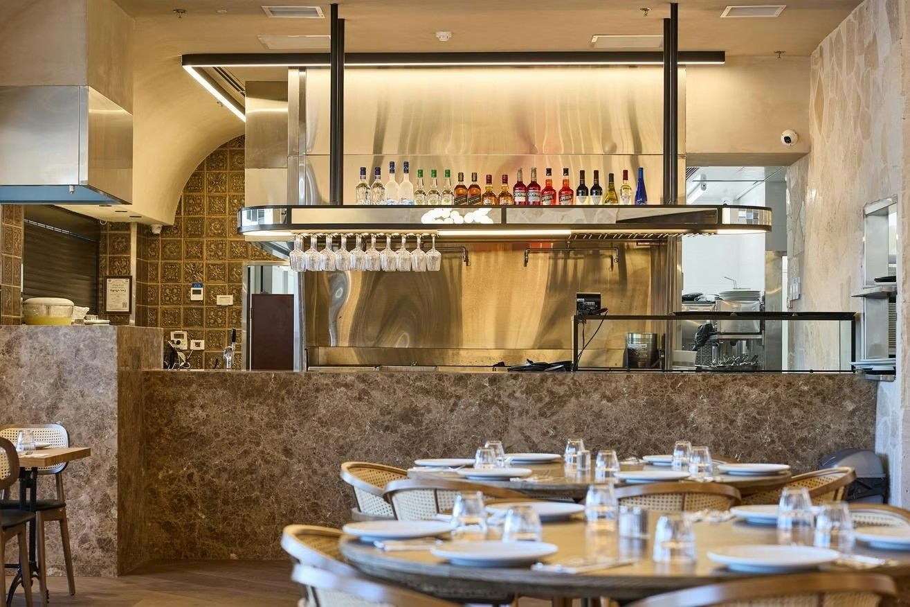
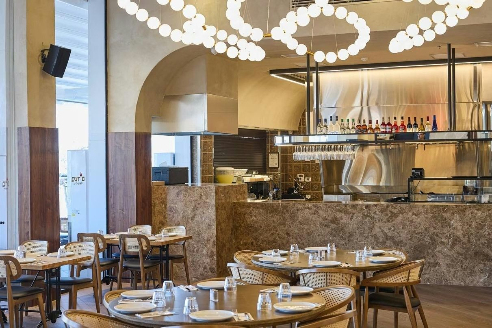
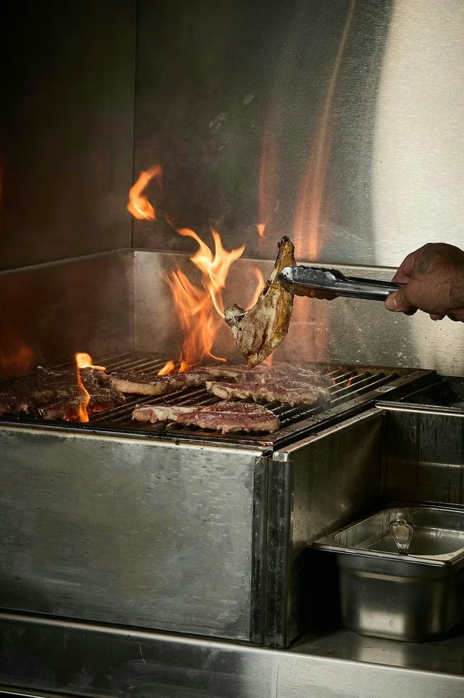
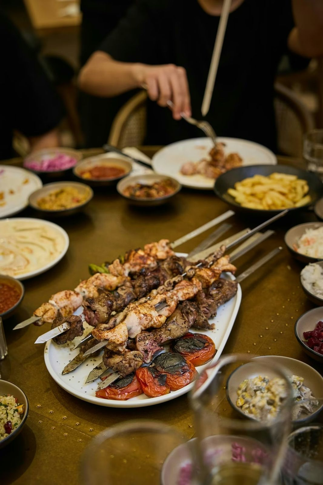
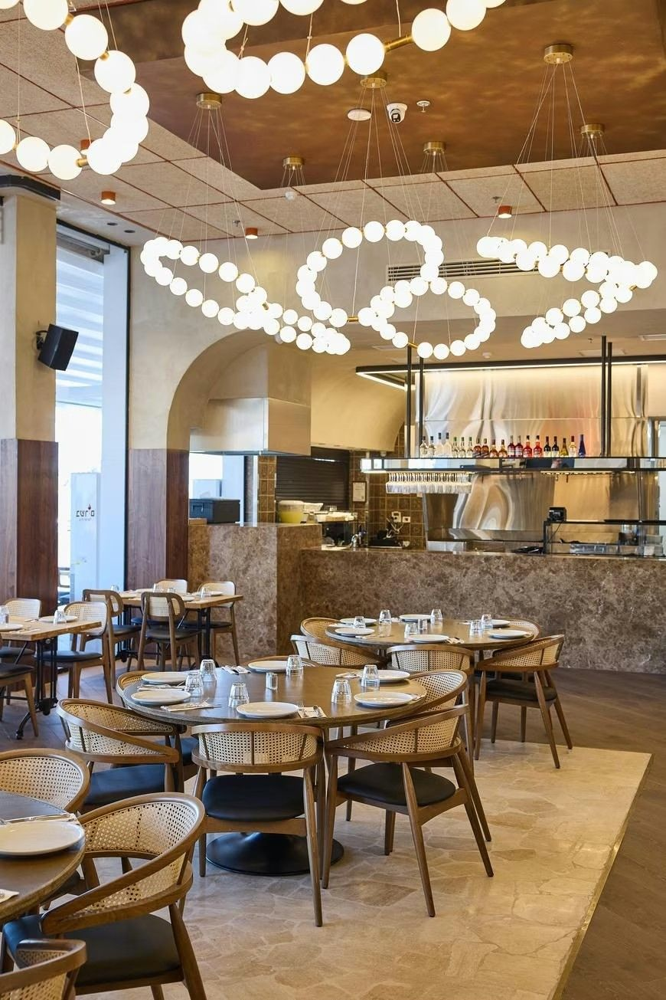
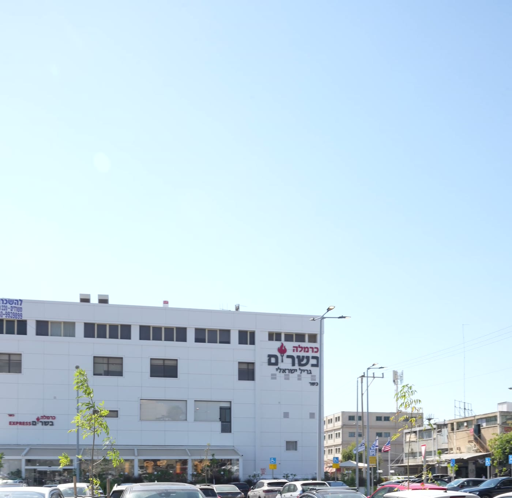

גריל ישראלי, לאפה מהטאבון ושולחן מלא של אירוח, באזור התעשייה של אור יהודה.
כרמלה בשרים היא מסעדת גריל כשרה באור יהודה. מתחילים בסלטי הבית ובלאפה חמה מהטאבון, ממשיכים לשיפודים ולנתחים מהגריל, ונשארים עד חצות.
כרמלה בשרים היא גם בית לאירועים של עד 100 אורחים, בחלל שלם עם בר וטאבון פתוח.

שמרו מקום מראש, בכמה שניות
להזמנההטעמים של כרמלה, עד הבית
לוולטהחרושת 16, אור יהודה, חניה בשפע
ניווט בוויז



החרושת 16, אור יהודה, מיקוד 60211. יש חניה בשפע ממש ליד המסעדה.
ראשון עד חמישי 11:00 עד 00:00. שישי מ-11:00 עד חצי שעה לפני כניסת שבת. במוצאי שבת מחצי שעה אחרי צאת שבת עד 00:00.
כן, בהשגחת הרבנות אור יהודה.
בכפתור הזמנת שולחן, או בטלפון 03-540-7787.
כן, דרך וולט, וגם איסוף עצמי.
כן, עד 100 אורחים. מתאמים מול משה בטלפון 03-540-7787.
החרושת 16, אור יהודה · מיקוד 60211
טלפון: 03-540-7787
חניה בשפע ממש ליד המסעדה · כשר, הרבנות אור יהודה
